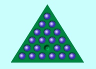
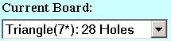
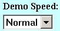

Triangle Peg Solitaire Instructions
 Jump one peg over another into an empty spot, removing the jumped peg from the board. You can jump along any of the three directions parallel to the outside edges of the board. Just click on a peg and if there's a jump available, the peg will jump. If there's more than one jump available, you'll need to click on a destination. The game is over when no more jumps are possible, and the goal is to finish with one peg.
What do all the controls do?
| Opens this help window. | ||
| Resets the game to the starting position with one peg missing. | ||
| Fills the entire board with pegs. Click on one of them to set the starting vacancy (peg missing at the start). Then begin play as usual, or hit Solve. | ||
| Take back the last jump (all the way back the start if you like). Very useful if you reach a dead end. You can also back up after pausing a demo or after the demo is finished. | ||
| Solve the puzzle down to one peg (play a demo). You do not have to Restart the game before hitting Solve, it will reset automatically.. When you play a demo, this button changes to Pause, and if you click it the demo will pause, and the button changes to Continue. You can use these controls to halt the solution at any intermediate point. You can even start playing from an intermediate point — however if you play a move manually you cannot continue the demo. | ||
|  | Use this to change the size of the board to a triangle with 4 to 8 pegs on a side (10 to 36 holes). | |
|  | This sets the time delay between jumps when playing a demo. You can even change this control while a demo is playing, to speed it up or slow it down. Slow, Normal, Fast, Faster and Fastest correspond to delays of 2, 1, 1/2, 1/10 and 0 seconds between jumps. Note that the Fastest delay of zero may not update correctly in all browsers. | |
Is it always possible to win (reduce the board to one peg)?
This is always possible except on the 10 and 28 hole boards. To learn more about why see this page on Triangular Peg Solitaire.George Bell, March 2005